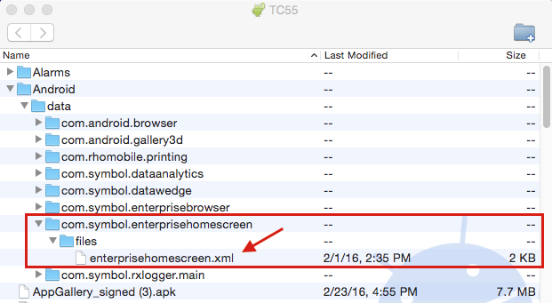
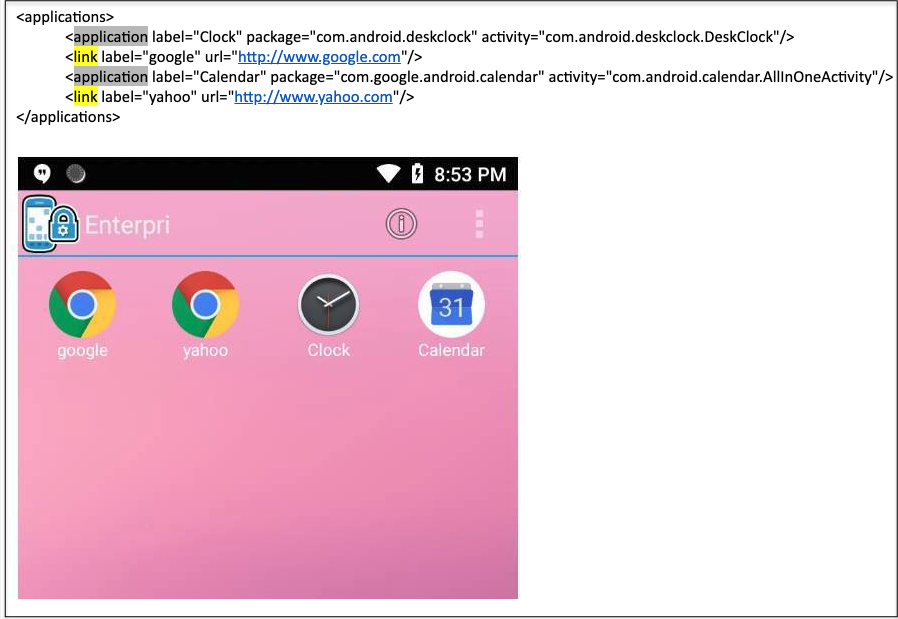
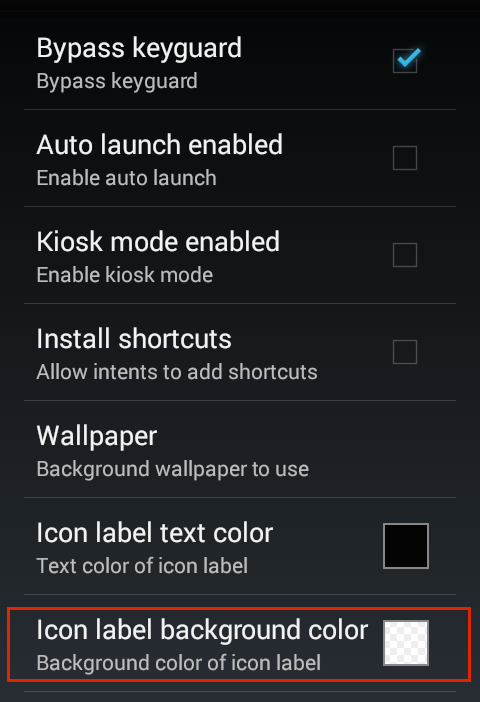
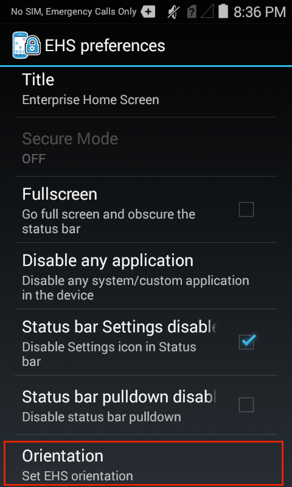
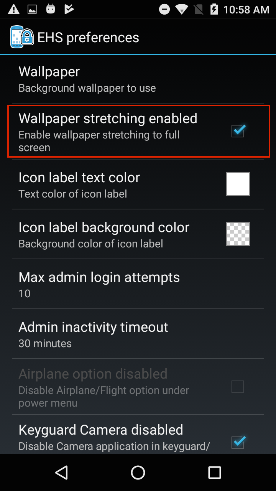
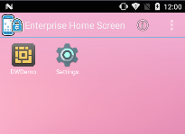
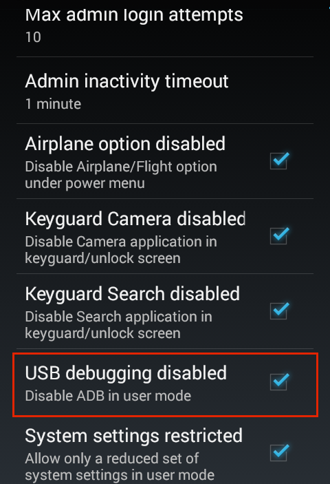
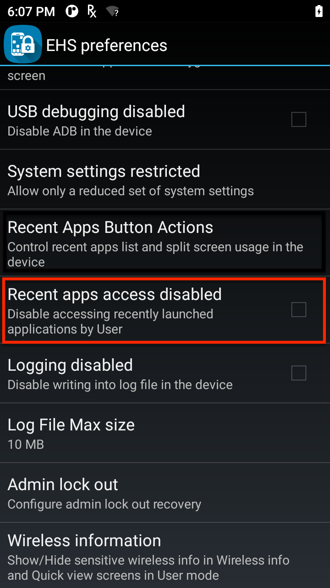
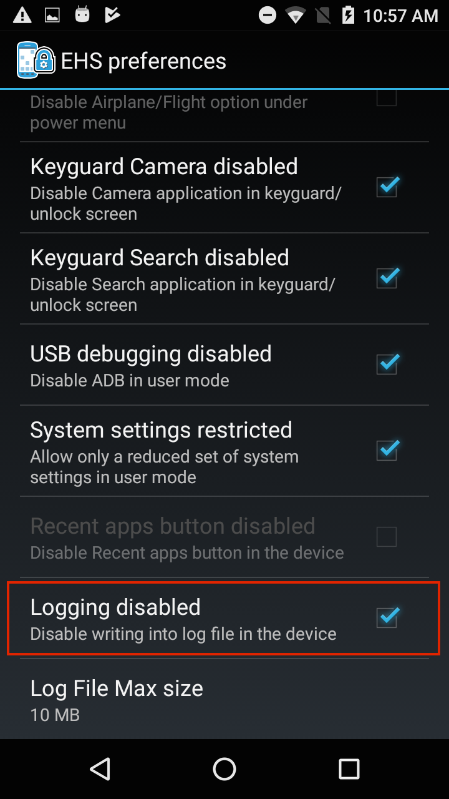
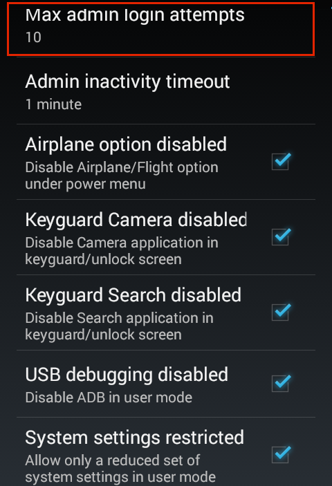

概要
このセクションでは、Enterprise Home Screen の基本的な知識、およびその機能と基本的な操作について説明します。Zebra の Android デバイス用無料セキュリティ ツールに慣れていない場合は、このガイドの先に進む前に、「概要」ページと「セットアップ」ページを参照してください。キオスク モード、デバイス ロギング、およびその他の特殊な EHS 機能については、『Special Features Guide』も参照してください。
Enterprise Home Screen の動作は、任意のテキスト エディタで変更できる読みやすいファイルである enterprisehomescreen.xml によって制御されます。ファイルのデフォルト バージョンには、多くの共通デバイス セキュリティ設定といくつかの標準アプリが含まれており、すべての EHS インストールの一部となっています。多くの場合、EHS の使用を開始するために必要なのは、組織独自のアプリケーションを追加し、優先するセキュリティと表示設定を適用することだけです。
このガイドについて
このガイドでは、enterprisehomescreen.xml 構成ファイルのみを使用してアプリを追加し、設定を構成する方法について説明します (GUI を使用して設定を構成することもできる場合は、スクリーンショットが表示されます)。EHS と構成ファイル間の相互作用の詳細を説明し、会社固有の要件のファイルへのアクセスとカスタマイズ、および設定をデバイスに展開するための手順を示します。各パラメータとその構成方法の例とともに、構成ファイルの詳細な分析を次に示します。
注: EHS の機能の多くは、EMDK を介してプログラムで、または StageNow またはサードパーティのモバイル デバイス管理 (MDM) システム (MDM システムでサポートされている場合) を使用してリモートで、デバイス上のその他の手段で行うことができます。EHS は、これらの機能を 1 つのツールにまとめます。
構成ファイルの操作
このセクションでは、EHS と enterprisehomescreen.xml 構成ファイル間の重要な相互作用、およびファイルを取得、変更、デバイスに展開する手順について説明します。
構成ファイルの場所
- 構成ファイルは、デバイスの
/enterprise/usrディレクトリに保存されます。 - このディレクトリは、Windows エクスプローラや Android ファイル転送 (Mac) など、ほとんどのアプリでは表示されません。
- このディレクトリは、Android ファイル ブラウザに表示され、そのコンテンツを管理するために使用できます。
- このファイルには、"pull" コマンドと "push" コマンドを使用して Android Debug Bridge (ADB) からアクセスできます。
注: ファイル ブラウザをユーザーに公開する場合は注意してください。このブラウザを使用して、EHS 構成ファイルを操作またはセキュリティやその他の設定を変更できます。
禁止されている文字
EHS 構成ファイルは完全に XML に準拠しており、EHS の XML パーサーが読み取ることができるようにその状態を維持する必要があります。XML 仕様では、仕様に記載されている方法を除き、5 つの文字 (" ' < > &) の使用が禁止されています。これらの文字が XML コンテンツの一部として必要な場合は、次のように "エスケープされた" 相当する文字に置き換える必要があります。
" (引用符) "
' (アポストロフィ) '
< (小なり) <
> (大なり) >
& (アンパサンド) &
構成ファイル アクセス
ADB の使用
Android Debug Bridge (ADB) は、enterprisehomescreen.xml ファイルを介して EHS 設定の変更を構成およびテストするための "プル-編集-プッシュ-テスト" サイクルを実行する最も効率的な方法です。このプロセスには、EHS がインストールされたデバイスに USB で接続された Mac または Windows PC が必要です。ソフトウェアのセットアップのヘルプについては、『セットアップ ガイド』を参照してください。
注: デバイスがマルチユーザー モードの場合、SD カード スロットは無効になります。詳細については、「特別な機能」セクションを参照してください。
EHS がインストールされているターゲット デバイスに接続されているコンピュータから:
1.デフォルトの場所からローカル PC に ADB を使用して構成ファイルをプルします。
adb pull /enterprise/usr/enterprisehomescreen.xml
2.テキスト エディタで構成ファイルを探して開き、編集して、変更を保存します。ファイル名は一切変更しないでください。
3.デバイスに編集した構成ファイルをプッシュします。
adb push enterprisehomescreen.xml /enterprise/usr/enterprisehomescreen.xml
重要: 必ず編集したソース ファイルの名前を adb push コマンドに含めてください。含めないと、変更が無視される可能性があります。
変更される内容
- 新しいバージョンの構成ファイルをプッシュすると、古いバージョンが上書きされます。
- EHS が実行中の場合、新しい設定はすぐに有効になります。
- EHS がバックグラウンドにある場合、次回 EHS がフォアグラウンドに来るときに新しい設定が有効になります。
その他のメモ:
- 構成ファイルには、小文字で「
enterprisehomescreen.xml」と名前を付ける必要があります。 - 他のスペルや大文字と小文字の違いを含むファイルは無視されます。
- 構成ファイルがデバイスから削除されると、EHS はデフォルト設定で新しい構成ファイルを生成します。
- 大文字と小文字が混在する同じ名前の構成ファイルが導入された場合は、大文字と小文字を正しく表記したファイルが上書きされます。
- 大文字と小文字が正しくない構成ファイルは、存在しないものとして扱われるか、予期しない結果の原因になります。
- 構成が完了すると、構成ファイルは、EHS アプリケーションの有無にかかわらず MDM を使用した大規模な展開に適しています。
構成ファイルのエクスポート
デバイスのトラブルシューティングやその他のシナリオでは、構成ファイル (enterprisehomescreen.xml) を表示したり、ファイル内を見てその設定を確認したりすると便利な場合があります。ファイルは、ファイル システムの可視領域にエクスポートして、管理者モードから表示できます。また、Android ファイル ブラウザを使用して、構成ファイルを表示、コピー、移動、および電子メールまたはその他の手段で共有することもできます。
注:
- デバイス ファイル システムの可視領域にエクスポートされた構成ファイルは、デバイスが再起動されるまで PC に表示されない場合があります。
- デバイスがマルチユーザー モードの場合、SD カード スロットは無効になり、エクスポート先フォルダを選択してもリムーバブル ストレージ デバイスは表示されません。
構成ファイルをエクスポートするには:
1.デバイスの管理者モードで、[ツール] メニューから [構成ファイルのエクスポート] を選択します。
2.[OK] をタップして、操作を確定します。 マルチユーザー モードが有効な場合、リムーバブル ストレージ デバイスは表示されません。
マルチユーザー モードが有効な場合、リムーバブル ストレージ デバイスは表示されません。
3.確認メッセージに記載されている場所をメモします。
4.PC に構成ファイル (矢印) をドラッグして、Windows Explorer、Android ファイル転送 (図を参照)、または同様の方法で編集します。 
注: デバイス ファイル システムの可視領域にエクスポートされた構成ファイルは、デバイスが再起動されるまで PC に表示されない場合があります。
ファイル ブラウザの使用
Android ファイル ブラウザを使用すると、デバイス上の構成ファイルの内側をすばやく表示できます。また、ファイルのコピー、移動、または (電子メール、Bluetooth、あるいはデバイスで有効になっている他の手段で) 共有を行うこともできます。 構成ファイルは WS50 デバイスでは表示できません。WS50 の EHS の詳細。
デバイス上の構成ファイルの内側を見るには、次の手順を実行します。
1.ファイル ブラウザで、/enterprise/usr ディレクトリに移動します。
2. enterprisehomescreen.xml ファイルを長押しすると、[ファイル操作] メニューが表示されます。
3.[ファイルを指定して開く] を選択してビューアーを選択し、[起動] を押します。
また、[txt] をタップして拡張子タイプを指定する必要がある場合もあります。
3.構成ファイルが Android HTML ビューアーで開きます。
デフォルトの構成ファイル
このセクションでは、EHS の動作のすべての側面を制御する enterprisehomescreen.xml 構成ファイルについて説明します。デフォルトのバージョンを以下に示し、次にファイルの XML タグとそれぞれの構成オプションについて説明します。
EHS 構成ファイルは、次の 5 つのセクションに分かれています。
- キオスク - デバイスがキオスク モードのときに実行する 1 つのアプリケーションを指定します。
- アプリケーション - デバイスが ユーザー モードのときに表示されるアプリ。
- ツール - [ユーザー] および [管理ツール] メニューから表示および起動するアプリ。
- パスワード - 管理者モードにログインするための暗号化されたパスワードを保存します。
- 設定 - デバイスに表示する機能と設定を制御します。
デフォルトの EHS 設定ファイル:
<?xml version="1.0" encoding="utf-8"?>
<config>
<kiosk>
<application label="DWDemo" package="com.symbol.datawedge" activity="com.symbol.datawedge.DWDemoActivity"/>
</kiosk>
<applications>
<application label="DWDemo" package="com.symbol.datawedge" activity="com.symbol.datawedge.DWDemoActivity"/>
</applications>
<tools>
<application label="DWDemo" package="com.symbol.datawedge" activity="com.symbol.datawedge.DWDemoActivity"/>
</tools>
<passwords>
<admin></admin>
</passwords>
<preferences>
<title>Enterprise Home Screen</title>
<icon_label_background_color>#00FFFFFF</icon_label_background_color>
<icon_label_text_color>#FFFFFFFF</icon_label_text_color>
<orientation></orientation>
<auto_launch_enable>0</auto_launch_enable>
<service_auto_launch_enable>0</service_auto_launch_enable>
<wallpaper></wallpaper>
<kiosk_mode_enabled>0</kiosk_mode_enabled>
<keyguard_camera_disabled>1</keyguard_camera_disabled>
<keyguard_search_disabled>1</keyguard_search_disabled>
<usb_debugging_disabled>1</usb_debugging_disabled>
<system_settings_restricted>1</system_settings_restricted>
<recent_apps_button_disabled>1</recent_apps_button_disabled>
<recent_apps_access_disabled>1</recent_apps_access_disabled>
<wireless_info>
<show_ip_address>0</show_ip_address>
<show_mac_address>0</show_mac_address>
<show_bssid>0</show_bssid>
<show_ssid>0</show_ssid>
<show_scan_result>0</show_scan_result>
</wireless_info>
<screen_blanking>
<blanking_enabled>0</blanking_enabled>
<speed_threshold>10</speed_threshold>
<blanking_mode>1</blanking_mode>
</screen_blanking>
</preferences>
</config>
構成タグ
このセクションでは、enterprisehomescreen.xml ファイル内のすべてのタグとその使用可能な値について説明します。デフォルト ファイルに表示される順序と同じ順序で表示され、その後にオプションのタグが続きます。タグは任意の順序で表示できますが、<config> </config> タグ セット (ノード) 内に含まれている必要があります。
キオスク
デバイスがオプションのキオスク モードの場合に実行するアプリを指定します。キオスク モードでは、1 つのアプリが画面全体に表示され、戻るキーとホーム キーを使用してモードを終了することはできません。キオスク モードは、<Preferences> セクションの <kiosk_mode_enabled> タグを使用して有効にします。

使用可能な値:
- ラベル: 文字列
- パッケージ: アプリのパッケージ名
- アクティビティ (オプション): アプリの起動時に呼び出されるアクティビティの名前
例
<kiosk>
<application label="Calculator" package="com.android.calculator2" activity=""/>
</kiosk>
アプリケーション
EHS がユーザー モードのときにユーザーに表示されるアプリケーションやブラウザのリンクを指定します。オプションのアクティビティ パラメータを使用すると、アプリケーションの起動時にアプリケーション アクティビティを呼び出すことができます。一部のアプリケーションは、アプリケーション パッケージとアクティビティが指定されない限り起動しません。
リンクを指定する場合、Mozilla Mobile ブラウザなどの特定のアプリケーションで、パッケージとアクティビティのパラメータを使用して URL を起動できます。アクティビティが指定されていない場合、EHS はデフォルトのブラウザを使用してリンクを開きます。
注:
- パッケージ名は、Android のバージョンによって異なる場合があります。
- EHS 3.0 以降では、VectorDrawable アプリのアイコンがサポートされています。このアイコンは、画像品質を損なうことなく、さまざまなサイズにスケールできます。詳細はこちら。
- ファイルが次のように存在する場合、Android 8.x Oreo (以降) を実行しているデバイスでは、EHS は、「URL」タグ (つまり「file://*.html」) からローカル ファイルを参照するリンクを起動できます。
- Android 11 以降の場合: /enterprise/usr/
- Android 10 以前の場合: 内部または外部ストレージ (SD カードなど)
- アプリケーションとリンクは、<applications> ノードにリストされている順序でユーザー モード起動プログラムに表示されます。
- アプリとリンクが <applications> ノードに存在する場合、ノード内の順序に関係なく、最初にリンクが表示され、次にアプリが表示されます (下の図を参照)。リンクは、ノード内の順序に関係なく、アプリの前に表示されます。
画像をクリックすると拡大表示され、Esc キーを押すと終了します。
中国語版
簡体字中国語にローカライズされた EHS バージョンでは、デフォルトの enterprisehomescreen.xml 構成ファイルに英語のタイトルのサンプル アプリが含まれています。中国語版に同じアプリが追加された場合、これらのアプリはユーザー モードで、1 回英語のタイトルでもう 1 回は中国語のタイトルで、2 回表示されます。これが望ましくない場合は、構成ファイルの <applications> ノードから不要な <application> エントリを削除します。
アプリケーションの例
使用可能な値 (アプリ):
- ラベル: 文字列
- パッケージ: アプリのパッケージ名
- * (アスタリスク): 同じプレフィックスを持つ複数のパッケージを指定するためにワイルドカードとして使用されます
- 除外: ワイルドカードを使用して、1 つ以上のアプリをワイルドカード セットから除外します
- アクティビティ (オプション): アプリの起動時に呼び出されるアクティビティの名前
ワイルドカードを使用して複数のアプリを選択する XML の例:
<applications>
//The following lines:
<application label="Packaging" package="com.mobility.packaging" activity=""/>
<application label="Online" package="com.mobility.online" activity=""/>
<application label="Remote" package="com.mobility.remote" activity=""/>
<application label="Inventory" package="com.mobility.inventory" activity=""/>
<application label="Orders" package="com.mobility.orders" activity=""/>
//...could be replaced with this single line using the wildcard character:
<application package="com.mobility.*"/>
//...adding a label to line above applies the label to all apps in the wildcard set:
<application label="RetailApps" package="com.mobility.*"/>
//To exclude one or more apps from the wildcard set:
<application package="com.mobility.*" exclude=”com.mobility.inventory”/>
//The line above removes the "inventory" app. The line below removes both the "inventory" and "online" apps.
<application package="com.mobility.*" exclude=”com.mobility.inventory; com.mobility.online”/>
</applications>
ワイルドカードを使用して、最初の文字が「c」のすべての Android アプリを表示します。
<applications>
<application label="" package="com.android.c*"/>
</applications>
電卓を除く、文字「c」で始まるすべての Android アプリを表示します。
<applications>
<application label="" package="com.android.c*" exclude="com.android.Calculator2"/>
</applications>
連絡先とカメラを除く、文字「c」で始まるすべての Android アプリを表示します。
<applications>
<application label="" package="com.android.c*" exclude="com.android.camera2;com.android.contacts"/>
</applications>
ワイルドカード ルール:
個々のアプリとワイルドカード セットは、<applications> ノードにリストされている順序でユーザー モード起動プログラムに表示されます。
各ワイルドカード セット内のアプリは、そのセット内の他のアプリとの関係でアルファベット順にラベルでリストされます。
ワイルドカード検索は、"<any_name>.<any_name>*" 形式に準拠したパッケージで機能するように設計されています。
bundle 属性と icon 属性が使用されている場合、指定された同じ属性が、ワイルドカードで選択されたすべてのアプリに適用されます。
ワイルドカード検索は、ユーザー モード アプリでのみ機能します。[ツール] メニュー、自動起動、またはキオスク モードで指定されたアプリではサポートされません。
ワイルドカードによって選択されたアプリは、管理者モードで長押し機能を使用して削除することはできません。
ワイルドカード検索から除外されたアプリは、管理者モードで長押し機能を使用して追加できません。
exclude 属性はワイルドカード文字をサポートしていません。アプリは一度に 1 つずつ除外する必要があります。
<applications> ノードで個別に指定され、ワイルドカード検索に含まれたアプリは、"exclude" 属性またはタグを使用して除外することはできません。
XML でラベルが未定義の場合、Android マニフェストに表示されるアイコンにワイルドカード選択アプリのラベルが適用されます (マニフェストで未定義の場合、アプリは空白のラベルで表示されます)。
18 文字を超えるラベルは、18 文字で切り捨てられ、省略記号 (...) が付加されます。
ワイルドカード検索で指定されたラベルは、検索で識別されたすべてのアプリに適用されます。
ワイルドカード文字は、行ごとに 1 回だけ、行の最後にのみ表示されます。
以下のワイルドカード検索はセキュリティ対策として EHS によってブロックされており、すべての標準 Android アプリが誤って含まれないようにしています。
- com.android.*
- com.android*
- com.androi*
- com.andro*
- com.andr*
- com.and*
- com.an*
- com.a*
- com.*
ワイルドカード検索には、「com.androidX」を含めることができます。ここで、X はドット (.) を除く任意の文字です。
enterprisehomescreen.logファイルには、無効なワイルドカード使用によるエラー メッセージが保存されます。EHS アプリと EHS インストーラは、常にフィルタされたアプリ リストから除外されます。
URL の例
使用可能な値 (URL)
- ラベル: 文字列
- パッケージ: URL (http://、https:// または file://*.html)
- ファイルへのリンクは外部ストレージ (SD カード) に存在する必要があります。
サンプル XML (Web リンク用)
<applications>
...
<link label="Mozilla Mobile" url="http://www.mozilla.org/en-US/mobile/" package="org.mozilla.firefox" activity="org.mozilla.firefox.App" />
...
</applications>
上記の例では、パッケージ属性とアクティビティ属性を使用して、Mozilla Mobile ブラウザで URL を起動します。(パッケージおよびアクティビティ パラメータで定義されている) 指定されたアプリがデバイスに存在しない場合、URL は表示されません。アクティビティが指定されていない場合、EHS はデフォルトのブラウザを使用してリンクを起動します。
リンクの削除
ユーザー モード画面から Web リンクを削除するには:
enterprisehomescreen.xmlファイルの <applications> ノードからタグ全体 (上図のように、「<link label=」で始まり「/>」で終わります) を削除します。- 変更した
enterprisehomescreen.xmlファイルをデバイスに再配置します。
ツール
管理者モードとユーザー モードの [ツール] メニューに表示するアプリを指定します。注: パッケージ名は、Android のバージョンによって異なる場合があります。
使用可能な値:
- ラベル: 文字列
- パッケージ: アプリのパッケージ名
- アクティビティ (オプション): アプリの起動時に呼び出されるアクティビティの名前
例
<tools>
...
<application label="Calculator" package="com.android.calculator2" activity=""/>
...
</tools>
パスワード
管理者モードにログインするための暗号化されたパスワードを保存します (デフォルトでは空白)。構成ファイルでこのタグを手動で入力したり編集したりしないでください。管理者パスワードは、EHS 管理者モードの [ツール] メニューから入力または変更した後、EHS によってプログラムで保存されます。EHS はこのタグを使用して、パスワードを 256 ビットの AES 暗号化ハッシュとして保存します。パスワードが作成されて構成ファイルに保存されると、他のすべての設定とともに、パスワードを大規模展開できます。
パスワード暗号化に関する重要事項:
- EHS 2.8 以降では、以前のバージョンよりも安全な暗号化方法を実装しています。
- EHS 3.0 (以降) は、古い EHS バージョンの構成ファイルに保存されているパスワードと下位互換性があります。
- EHS 3.0 では、以前のバージョンのパスワードにアクセスした後、新しい暗号化方法を使用してそのパスワードを構成ファイルに保存します。
- 新しい暗号化を使用して構成ファイルを更新すると、そのファイルは古い EHS バージョンと互換性がなくなります。
 管理者パスワードは、EHS GUI の [管理ツール] メニューを使用して入力および変更する必要があります。
管理者パスワードは、EHS GUI の [管理ツール] メニューを使用して入力および変更する必要があります。
使用可能な値:
- (EHS 専用。このタグの内容に追加したり編集したりしないでください)
例
<passwords>
<admin>EHS USE ONLY</admin>
</passwords>
アプリのアイコン サイズ
アプリケーション アイコンのサイズを小、中、大、特大、超特大に設定できます。アイコンのサイズは、管理者モードまたはユーザー モードで enterprisehomescreen.xml ファイルまたはデバイス UI を使用して制御できます。
注:
- この機能は WS50 デバイスでは設定できません。WS50 の EHS の詳細。
- EHS 3.0 以降では、VectorDrawable アプリのアイコンがサポートされています。このアイコンは、画像品質を損なうことなく、さまざまなサイズにスケールできます。詳細はこちら。
- マルチユーザー モード が有効になっている場合、アプリ アイコンのサイズを変更できるのはプライマリ ユーザーのみです。
UI を使用してアイコン サイズを変更するには:
管理者モードまたはユーザー モードで、メニュー アイコンをタップし、アイコン設定を選択します。 アイコン サイズの設定は、管理者モードとユーザー モードに適用されます。
アイコン サイズの設定は、管理者モードとユーザー モードに適用されます。
WS50 デバイスでは一部のメニュー機能を使用できません。WS50 の EHS の詳細。
目的のアイコン サイズをタップし、[OK] をタップします。選択したサイズがすぐに適用されます。 デフォルトのアイコン サイズは [中] (図を参照) です。
デフォルトのアイコン サイズは [中] (図を参照) です。
 アプリのアイコンは 5 つのサイズで表示できます。変更は管理者モードとユーザー モードに適用されます。
アプリのアイコンは 5 つのサイズで表示できます。変更は管理者モードとユーザー モードに適用されます。
enterprisehomescreen.xml ファイルを使用してアイコン サイズを設定するには:
使用可能な値:
- S = 小さいアイコン
- M = 中サイズのアイコン
- L = 大きいアイコン
- XL = 特大アイコン
- XXL = 超特大アイコン
例
<user_options>
<icon_settings>
<app_icon_size>XL</app_icon_size>
</icon_settings>
<user_options>
設定
[EHS ユーザー設定 UI] パネルで設定されたオプションに対応する EHS の動作、セキュリティ、表示設定のさまざまな面を制御します。個々の設定のタグは任意の順序で表示できますが、<preferences> </preferences> ノードに含まれている必要があります。
タイトル
EHS アプリケーションのタイトル バー テキストを指定します。デフォルトのタイトル「Enterprise Home Screen」は、任意の文字列または絵文字に変更できます。デバイス固有 (動的) オプションについては、下の「タイトルのデバイス ID」を参照してください。

使用可能な値:
- 文字列
例
<preferences>
<title>MetaCorp Home Screen</title>
</preferences>
タイトルのデバイス ID
EHS ホーム画面のタイトル バー テキストとして表示されるデバイスを一意に識別する (動的) 情報を許可します。シリアル番号、Wi-Fi MAC アドレス、Wi-Fi ホスト名、Bluetooth アドレス、Bluetooth 名または IMEI 番号を指定します。
使用可能な値:
- 1 つのデバイス ID の前または後のプレーン (静的) テキストまたは絵文字:
- [bluetooth_address] - Bluetooth MAC アドレス (以下の注を参照)
- [bluetooth_name] - Bluetooth の "わかりやすい" デバイス名
- [imei_number] - 国際移動体装置 ID (WWAN デバイスのみ。下の注を参照)
- [mac_address] - Wi-Fi MAC アドレス
- [network_host_name] - Wi-Fi ホスト名
- [serial_number] - デバイスのシリアル番号
注:
- WWAN 以外のデバイスで IMEI 番号 が指定されている場合、デフォルトの EHS タイトルが表示されます。
- タイトルとして Bluetooth MAC アドレスを表示するには、デバイスで Bluetooth を有効にする必要があります (「Bluetooth を有効にする方法」)。
- MAC アドレスが指定されていても使用できない場合は、デフォルトの EHS タイトルが表示されます。
警告: 上記で指定した場合を除き、<value> タグ内で角括弧を使用しないでください。
例
<preferences>
<title>
<value>MetaCorp device #[serial_number]</value>
</title>
</preferences>
注:
- <title> タグには、静的なタイトルまたは <value> タグのいずれかを含める必要があります。両方を含めることはできません。
- <title> タグが
enterprisehomescreen.xmlファイルに存在しない場合、または識別子データの取得に失敗した場合、テキスト「Enterprise Home Screen」が挿入されます。 - 識別子データの取得エラーは EHS ログに書き込まれます。
- 上記で指定した場合を除き、<value> タグ内で角括弧を使用しないでください。
タイトル バー アイコンが無効
EHS ホーム画面のタイトル バーにアイコンを表示するかどうかを制御します。値 0 (false) を指定すると、EHS は標準 EHS アイコンまたは下のタイトル バー アイコン ファイル パラメータで指定されたカスタム アイコンを表示できます。

使用可能な値:
- 1 - (デフォルト、表示アイコンなし)
- 0 - (EHS アイコンまたは下に指定されたアイコンを表示)
例
<preferences>
<title_bar_icon>
<title_bar_icon_disabled>0</title_bar_icon_disabled>
<title_bar_icon_file>/storage/sdcard0/Android/data/com.symbol.enterprisehomescreen/files/title.jpg</title_bar_icon_file >
</title_bar_icon >
</preferences>
タイトル バー アイコン ファイル
EHS タイトル バーに表示する画像を指定できます。メディア解像度の .bmp、.gif、.jpg、.png、および .webp 画像形式をサポートします (デバイスによって異なります。一部の高解像度画像は表示されない場合があります)。画像はデバイス上にローカルに保存され、enterprisehomescreen.xml ファイルまたは UI でフル パスを使用して指定する必要があります。画像は、使用可能な領域 (デバイスによって異なります) を埋めるために、画像の縦横比を使用してスケーリング (拡大または縮小) されます。タグが見つからないか空白のままになっている場合、または指定した画像ファイルが見つからないか無効である場合、(以下に示す) デフォルトの EHS アイコンが表示されます。アイコンは他の画面に表示することもできます。下の「カスタム アイコンの再使用」を参照してください。
[ユーザー設定] パネル UI を使用して画像を選択する場合は、タップ ナビゲーションを使用してデバイスのファイル システム内の画像を検索するか、キーボードを使用してファイル名とパスを指定します (ファイル ブラウザに表示されない制限領域で必要)。

使用可能な値:
- .bmp、.gif、.jpg、.png、または .webp 画像ファイルへの完全修飾ローカル (デバイス上の) パス
注:
- このタグを使用するには、<title_bar_icon> ノードをデフォルトでは含まれない
enterprisehomescreen.xmlファイルに追加する必要があります。 - デフォルトの EHS ロゴが使用されるのは、タグがないか空白のままになっている場合、または指定された画像ファイルが見つからないか無効である場合 (このようなインスタンスはログに記録されます) です。
/enterpriseディレクトリ内のファイルのみが永続的であり、エンタープライズ リセットの後もデバイスに残ります。- Zebra では、壁紙やアイコン イメージ ファイルには、リムーバブル ストレージを使用しないことをお勧めします。
- デバイスがマルチユーザー モードの場合、SD カード スロットは無効になります。このモードでは、リムーバブル ストレージ上のファイルにアクセスできません。
- ファイル ブラウザ UI を使用したフォルダ アクセスは、Android バージョンに基づいて次のように制限されます。
- Android 11 以降: /enterprise/usr/
- Android 10 以前:
- 内部ストレージ
- 外部ストレージ (SD カード)
- /enterprise/usr
例
<preferences>
<title_bar_icon>
<title_bar_icon_disabled>0</title_bar_icon_disabled>
<title_bar_icon_file>/storage/sdcard0/Android/data/com.symbol.enterprisehomescreen/files/title.jpg</title_bar_icon_file >
</title_bar_icon >
</preferences>
カスタム アイコンの再使用
オプションで、タイトル バー アイコン ファイル タグ (上) を使用してカスタム グラフィックを指定して、[バッテリ情報]、[無線情報]、[ユーザー設定]、[ツール] メニュー ([バージョン情報] ボックスを除く) など、ほとんどの EHS 画面に表示できます。

使用可能な値:
- 1 - 別の EHS 画面でカスタム アイコンを再使用する
- 0 - アイコンを再使用しない (デフォルト)
例
<preferences>
<title_bar_icon>
<title_bar_icon_file>/storage/sdcard0/title.jpg</title_bar_icon_file >
<reuse_custom_icon>1</reuse_custom_icon>
</title_bar_icon >
</preferences>
注: このタグによって影響を受ける EHS 画面からカスタム アイコンを非表示にする (代わりにデフォルトの EHS ロゴを表示する) には、タグ値を「0」に設定します。[タイトル バー アイコンが無効] タグは、ホーム画面にのみ適用されます。
アイコン ラベル背景色
管理者モードとユーザー モードで表示されるアプリとリンクのアイコン ラベル テキストの背景色を指定します。デフォルトの背景は #00FFFFFF で、不透明度値 00 (00 ～ FF) の透明度です。HTML カラー コードの選択に関するヘルプを表示します。

コード キー:
- AA は不透明度を指定します
- RR は赤のレベルを指定します
- GG は緑のレベルを指定します
- BB は青のレベルを指定します
使用可能な値:
- 不透明度のプレフィックスを含む、または含まない HTML 16 進数のカラー コード値 (#RRGGBB または #AARRGGBB)
- 色名: 赤、青、緑、黒、白、グレー、シアン、マゼンタ、イエロー、ライトグレー、ダークグレー。
例
<preferences>
<icon_label_background_color>#00FFFFFF</icon_label_background_color>
<icon_label_background_color>#75A319</icon_label_background_color>
<icon_label_background_color>#80EF671B</icon_label_background_color>
<icon_label_background_color>magenta</icon_label_background_color>
</preferences>
アイコン ラベル テキスト色
管理者モードとユーザー モードで表示されるアプリとリンクのアイコン ラベル テキストの色を指定します。EHS のデフォルト アイコン テキストの色は #FFFFFFFF で、不透明度の値が FF (00 ～ FF) の白です。HTML カラー コードの選択に関するヘルプを表示します。

コード キー:
- AA は不透明度を指定します
- RR は赤のレベルを指定します
- GG は緑のレベルを指定します
- BB は青のレベルを指定します
使用可能な値:
- 不透明度のプレフィックスを含む、または含まない HTML 16 進数のカラー コード値 (#RRGGBB または #AARRGGBB)
- 色名: 赤、青、緑、黒、白、グレー、シアン、マゼンタ、イエロー、ライトグレー、ダークグレー。
例
<preferences>
<icon_label_text_color>#FFFFFFFF</icon_label_text_color>
<icon_label_text_color>#75A319</icon_label_text_color>
<icon_label_text_color>#80EF671B</icon_label_text_color>
<icon_label_text_color>magenta</icon_label_text_color>
</preferences>
向き
画面の向きを横または縦に固定できます。この設定を省略または空白 (デフォルト) のままにすると、Android システムの向き設定で画面の向きを制御できます。
EHS がシステムの向きの設定 (EHS デフォルト) を受け入れるように設定されている場合のみ、画面の向きは、[クイック設定] パネルで変更できます。EHS 管理者が方向を横向きまたは縦向きモードに設定すると、デバイス ユーザーは方向設定を変更できなくなります。
注:
- 画面の向きをアプリとシステムで制御するのが望ましい場合、Zebra では、この設定を空白 (デフォルト) のままにすることをお勧めします。
- このパラメータを使用して設定された方向は、EHS ホーム画面、情報画面やユーザー設定画面などの EHS 画面にのみ適用されます。
- このパラメータ設定に関係なく、Android の向き (自動回転/縦/横) 設定は、非 EHS アプリケーションで引き続き有効です。

使用可能な値:
- 横向き
- 縦向き
- <blank> (システム設定を受け入れる。EHS デフォルト)
例
<preferences>
<orientation></orientation>
</preferences>
自動起動が有効 (アプリ)
EHS の起動後に 1 つまたは複数のアプリを自動的に起動できるようにします。オプションの <auto_launch> セクションで使用できます。有効にすると、<auto_launch> セクションで指定されたアプリは、指定された遅延後に起動されます。戻るキーとホーム キーを使用して、アプリを終了できます。詳細については、「オプションの機能タグ」セクションを参照してください。デフォルトでは無効です。関連項目: キオスク モード。
使用可能な値:
- 1 - 有効
- 0 - 無効 (デフォルト)
例
<preferences>
<auto_launch_enable>0</auto_launch_enable>
</preferences>
サービス自動起動が有効
EHS の起動後に 1 つまたは複数のサービスを自動的に起動できるようにします。オプションの <service_auto_launch> セクションで使用できます。有効にすると、<service_auto_launch> セクションで指定されたアプリが遅れて起動します (指定されている場合)。サービス自動起動機能は、enterprisehomescreen.xml ファイルまたは管理者モード UI で有効化/無効化でき、サービスは構成ファイルで指定する必要があります。詳細については、「オプションの機能タグ」セクションを参照してください。デフォルトでは無効です。

使用可能な値:
- 1 - 有効
- 0 - 無効 (デフォルト)
例
<preferences>
<service_auto_launch_enable>1</service_auto_launch_enable>
</preferences>
フォアグラウンド サービス自動起動が有効
EHS の起動後に、1 つまたは複数のサービスを自動的にフォアグラウンドで起動できるようにします。オプションの <foreground_service_auto_launch> セクションで使用できます。有効にすると、<foreground_service_auto_launch> セクションで指定されたアプリが遅れて起動します (指定されている場合)。フォアグラウンド サービス自動起動機能は、enterprisehomescreen.xml ファイルまたは管理者モード UI (Oreo デバイスのみ) で有効化/無効化でき、サービスは構成ファイルで指定する必要があります。詳細については、「オプションの機能タグ」セクションを参照してください。デフォルトでは無効です。

使用可能な値:
- 1 - 有効
- 0 - 無効 (デフォルト)
例
<preferences>
<foreground_service_auto_launch_enable>1</foreground_service_auto_launch_enable>
</preferences>
壁紙
管理者モードおよびユーザー モードでの表示用に背景画像を指定できます。指定しない場合は、システムのデフォルト画像が表示されます。.bmp、.gif、.jpg、.png、および .webp ファイル形式をサポートします。解像度のサポートはデバイスによって異なります。選択した画像が表示されない場合、Zebra では、解像度を下げるか別の画像を選択することをお勧めしています。
[ユーザー設定] パネル UI を使用して画像を選択する場合は、タップ ナビゲーションを使用してデバイスのファイル システム内の画像を検索するか、キーボードを使用してファイル名とパスを指定します (ファイル ブラウザに表示されない制限領域で必要)。

使用可能な値:
- .bmp、.gif、.jpg、.png、または .webp ファイルへの完全修飾ローカル (デバイス上の) パス
注:
/enterpriseディレクトリ内のファイルのみが永続的であり、エンタープライズ リセットの後もデバイスに残ります。- Zebra では、壁紙やアイコン イメージ ファイルには、リムーバブル ストレージを使用しないことをお勧めします。
- ファイル ブラウザ UI を使用したフォルダ アクセスは、Android バージョンに基づいて次のように制限されます。
- Android 11 以降: /enterprise/usr/
- Android 10 以前:
- 内部ストレージ
- 外部ストレージ (SD カード)
- /enterprise/usr
例
<preferences>
<wallpaper>/enterprise/usr/mybackground.png</wallpaper>
</preferences>
壁紙の拡張が有効
管理者モードおよびユーザー モードで表示する背景画像を拡張して全画面に表示する機能を有効化/無効化するために使用します。デフォルトでは無効です。この値が指定されていない場合、拡張は無効になります。サポートされているファイル形式と場所については、壁紙パラメータを参照してください。

デフォルトの壁紙の EHS: 
カスタム壁紙画像で拡張が無効 (デフォルト):
カスタム壁紙画像で拡張が有効:
使用可能な値:
- 1 - 有効
- 0 - 無効 (デフォルト)
例
<preferences>
<wallpaper_stretching_enabled >0</wallpaper_stretching_enabled >
</preferences>
全画面表示
EHS は、このタグの値を 1 に設定することで、全画面モードで実行するように設定できます。デフォルトは 0 です。EHS にのみ適用されます。EHS 内から起動されたアプリは、個別に設計どおりに動作します。一部のデバイスでは Android のステータス/通知バーへのアクセスを回避できません。

使用可能な値:
- 1 - EHS がフル スクリーン モードで動作する
- 0 - EHS がフル スクリーン モードで実行されない (デフォルト)
例
<preferences>
<fullscreen>1</fullscreen>
</preferences>
キオスク モードが有効
EHS の起動後、<kiosk> セクションで指定されたアプリを全画面モードで起動し、アプリを終了するために戻るキーとホーム キーを使用できないようにします。デフォルトでは無効です。関連項目: 自動起動。
有効化すると、USB デバッグが有効になっている場合に、タグが「0」に設定された新しい構成ファイルをプッシュすることで、キオスク モードを無効にできます。それ以外の場合は、工場出荷時リセットを実行する必要があります。キオスク モードは、Android インテントを使用して Android アプリケーションからプログラムで有効化/無効化にすることもできます。詳細については、「特別な機能」セクションを参照してください。
使用可能な値:
- 1 - 有効
- 0 - 無効 (デフォルト)
例
<kiosk_mode_enabled>0</kiosk_mode_enabled>
ピン ショートカット
Oreo (およびそれ以降の) デバイスのみに適用されます。ローカル アプリまたは Web サイトへのショートカットをプログラムで追加できるかどうかを制御します。デフォルトでは無効です。詳細については、「ショートカットとインテント」を参照してください。

使用可能な値:
- 1 - ピン留めされたショートカットを許可する
- 0 - ピン留めされたショートカットをブロックする (デフォルト)
例
<preferences>
<pin_shortcuts>0</pin_shortcuts>
</preferences>
インストール時の再起動が有効
インストールが正常に完了した後、EHS を初めて起動するときに、デバイスを自動的に再起動するかどうかを制御します。これは、EHS をアクティブ化するための要件です。インストール後にモバイル デバイス管理 (MDM) システムがデバイス制御を維持できるようにします。自動デバイス再起動はデフォルトでは無効になっています。
使用可能な値:
- 1 - 再起動する
- 0 - 再起動しない (デフォルト)
例
<preferences>
<reboot_on_install_enabled>0</reboot_on_install_enabled >
</preferences>
機内オプション無効
この機能は廃止され、EHS 3.0 以降からは削除されています。
Zebra EMDK または StageNow ツールから Power Key Manager を使用します。
キーガードのバイパス
この機能は廃止され、EHS 3.0 以降からは削除されています。
Zebra EMDK または StageNow ツールを介して DevAdmin を使用します。
キーガード カメラが無効
画面ロックが [スワイプ] モードに設定されている場合に、デバイス カメラにキーガード画面 (別名「ロック画面」) からアクセスできるかどうかを制御します。このタグの値が 1 (デフォルト) の場合、または未指定のままの場合、キーガード画面からのカメラ アクセスは無効になります。
キーガード カメラは、次の条件がすべて満たされている場合にのみ無効になります。
- カメラ アプリがデバイスで有効になっている
- キーガード画面が [スワイプ] モードになっている
- カメラ アイコンがキーガード画面に表示される
上記の 4 つの条件がすべて満たされない限り、このタグの値は無視されます。
注:
- カメラを使用できないようにするには、Zebra では、このタグを使用することおよびユーザー モード画面からカメラ アプリを削除することをお勧めしています。
- デバイスのロック画面にカメラのショートカットが存在しない場合は、このタグを使用する必要はありません。
- 管理ホーム画面でのカメラ アプリ アイコンの表示は、設定変更後に画面をロック解除してから 5 秒ほど遅れることがあります。

使用可能な値:
- 1 - 無効 (デフォルト)
- 0 - キーガードでカメラを有効にする
例
<keyguard_camera_disabled>1</keyguard_camera_disabled>
キーガード検索が無効
画面ロックが [スワイプ] モードに設定されている場合に、キーガード画面 (別名「ロック画面」) から検索アプリにアクセスできるかどうかを制御します。このタグの値が 1 (デフォルト) の場合、または未指定のままの場合、キーガード画面からの検索のアクセスは無効になります。
以下の条件がすべて満たされている場合にのみ適用されます。
- 検索アプリがデバイスで有効になっている
- キーガード画面が [スワイプ] モードになっている
- 検索アイコンがキーガード画面に表示される
上記の 4 つの条件がすべて満たされない限り、このタグの値は無視されます。注: デバイスのロック画面に検索アプリのショートカットが存在しない場合は、このタグを使用する必要はありません。
重要:
- 検索を使用できないようにするには、Zebra では、このタグを使用することおよびユーザー モード画面から検索アプリを削除することをお勧めしています。
- 管理ホーム画面での検索アプリ アイコンの表示は、設定変更後に画面をロック解除してから 5 秒ほど遅れることがあります。
- デバイスのロック画面に検索のショートカットが存在しない場合は、このタグを使用する必要はありません。

使用可能な値:
- 1 - 無効 (デフォルト)
- 0 - 有効
例
<keyguard_search_disabled>1</keyguard_search_disabled>
USB デバッグが無効
デバイスが管理者モードまたはユーザー モードのときに、デバイスとコンピュータの間で USB 経由の通信を許可するかどうかを制御します。設定を 1 (デフォルト) にするか、指定しない場合は、ユーザーがデバイス上のファイル システムおよびすべての ADB 機能にアクセスできなくなります。Zebra では、EHS をアンインストールする前に、USB デバッグを手動で目的の状態に戻すことをお勧めします。

使用可能な値:
- 1 - 無効 (デフォルト)
- 0 - 有効
例
<usb_debugging_disabled>1</usb_debugging_disabled>
システム設定が制限されています
デバイスが管理者モードまたはユーザー モードのときに、フル設定または制限された設定を使用できるかどうかを制御します。1 の設定 (デフォルト) またはそれ以外の設定を使用すると、ディスプレイとサウンド設定および [デバイス情報] パネルへのアクセスが制限されます。0 に設定すると、ユーザーはすべてのデバイス設定にアクセスできます。
以下の、重要な注意事項セクションを参照してください。
指定可能な値:
- 0 - フル設定
- 1 - ユーザー補助機能なしのシステム設定の縮小 (デフォルト)
- 3 - ユーザー補助機能ありのシステム設定制限 (デバイスに MX 11.7 以降および OSx 11.5.21 以降が必要)

Android のユーザー補助機能について詳細はこちら。
例
<preferences>
...
<system_settings_restricted>1</system_settings_restricted>
...
</b>preferences>
注:
- この設定を使用するには、事前にシステム設定アプリを明示的に有効にする必要があります。詳細については、アプリの有効化/無効化機能を参照してください。
- これにより、設定機能はブロックされず、単に [設定] パネルに表示されなくなります。Android では、状況によっては制限付き設定をユーザーが使用できるようになります。たとえば、デバイスのバッテリの残量が非常に少なくなった場合、Android はバッテリ残量低下警告ディスプレイのアプリにアクセスして、停止、無効化、アンインストールできます。これは、設定アプリを完全に無効にすることによってのみ防止できます。
- サードパーティのショートカット クリエータを使用して、制限されたシステム設定コンポーネント (アプリ) へのショートカットを追加することもできます。ただし、このようなショートカットはユーザー モードでも使用できます。管理者だけがシステム設定コンポーネントにアクセスできるようにする場合は、ショートカットを使用してマッピングしないでください。
- EHS をアンインストールしても、制限されたシステム設定は元の状態に戻りません。これは、必要に応じて、EHS をアンインストールする前に手動で行う必要があります。
- Android 11 以降を実行しているデバイスでは、EHS 管理者は、Zebra Access Manager を通じて Android のユーザー補助機能を許可しながら、設定へのアクセスを制限できます (下記のリンクを参照)。この機能を使用するには、デバイスに MX 11.7 以降および OSx 11.5.21 以降が必要です。
- デフォルトの EHS 構成でシステム設定を減らすと、一部の MX 機能が期待どおりに動作しなくなる可能性があります。
詳細については、Access Manager ガイドのシステム設定アクセス セクションや以下のガイドを参照してください。- DevAdmin ガイド - 画面ロック タイプを設定
- UI Manager ガイド - 2 本指クイック設定の有効化/無効化
Zebra Access Manager のシステム設定アクセス パラメータの詳細はこちら。
最近使用したアプリへのアクセス
ユーザーの最近起動したアプリをそのユーザーが表示できるかどうかを制御します。ユーザー モードにのみ適用されます。デフォルトでは無効です (最近使用したアプリは表示されません)。タグが空白のままか、構成ファイルに存在しない場合、または無効な値が含まれている場合は、デフォルト値が使用されます。以下の注意事項セクションと重要な EHS セキュリティに関する注意事項も参照してください。

指定可能な値:
- 1 - 無効 (デフォルト)
- 0 - 有効
例
<preferences>
...
<recent_apps_access_disabled>1</recent_apps_access_disabled>
...
</preferences>
注:
- この機能を使用するには、[最近使用したアプリのアクセス] パラメータが 有効 (オプション 0) である必要があります (下記の [最近使用したアプリ] ボタンの動作セクションを参照)。
- フォアグラウンドに戻すときにアプリケーションの状態を保持するには、この機能を有効にします。
- 管理者モードで起動した場合、Google のクイック検索および Play ストア アプリ (
com.google.android.googlequicksearchboxおよびcom.android.vending) は、管理者が手動で消去しない限り、最近使用したアプリ リストに表示されます。
[最近使用したアプリ] ボタンの動作
[最近使用したアプリ] ボタンを使用して未承認のアプリや EHS 以外のホーム画面を起動できるかどうか、および [最近使用したアプリ] ボタンの短押しおよび長押し機能によって実行されるアクションを制御します。設定は、管理者モードとユーザー モードに適用されます。タグが空白のままか、構成ファイルに存在しない場合、または無効な値が含まれている場合は、デフォルト値が使用されます。重要な EHS セキュリティに関するメモを参照してください。
最近使用したアプリへのアクセス機能 (上記を参照) を使用するには、この機能 (オプション 0) を有効にします。
EHS を削除した後もこの設定は維持されます。
指定可能な値:
- 0 - 両方を有効にする (最近使用したアプリ一覧から分割画面へのアクセスに必要)
- 1 - 両方を無効にする (デフォルト)
- 2 - 短押しのみ: 最近使用したアプリを一覧表示する
- 3 - 長押しのみ: 分割画面モードでアプリを表示する (2 つのアプリを並べて実行する)
例
<preferences>
...
<Recent_apps_button_disabled>1</Recent_apps_button_disabled>
...
</preferences>
注:
- Android 11 (以降) を実行しているデバイスでは、[最近使用したアプリ] ボタンを長押ししても分割画面モードに直接アクセスできません。
Android 11 (以降) を実行しているデバイスで 2 つのアプリを並べて実行する方法:- 「両方を有効にする」設定 (上記どおり) が構成されていることを確認します
- [最近使用したアプリ] ボタンを短く押すと、最近使用したアプリの一覧が表示されます
- 画面分割したいアプリの 1 つを長押ししてオプションを表示し、[画面分割] を選択します。
この機能には、recent_apps_access_disabledパラメータを「0」に設定する必要があります。
無線情報
デバイスの Wi-Fi 接続に関する機密性が高い可能性のある情報をデバイスのユーザーに表示するかどうか、および表示する場合はどの設定を表示するかを制御します。デフォルトでは、IP アドレス、MAC アドレス、SSID、BSSID とスキャン結果は、ユーザー モードでは非表示になります。管理者モードには影響しません (すべてのワイヤレス設定が常に表示されます)。タグが空白のままになっている場合、設定ファイルにない場合、または無効な値が含まれている場合は、デフォルト値が使用されます。
注: 無線情報を表示するのが望ましい場合のみ、これらの設定を追加/編集します。

オプション表示:
- IP アドレス - 現在デバイスに割り当てられている IP アドレス
- MAC アドレス - デバイスのネットワーク インタフェース コントローラの一意の識別子
- SSID - サービス設定識別子。現在使用されているワイヤレス アクセス ポイントの名前
- BSSID - 現在使用中の SSID の MAC アドレス
- スキャン結果 - 最新のスキャンで検出された SSID のリスト
使用可能な値:
- 0 - 非表示 (デフォルト)
- 1 - 表示
例
<preferences>
<wireless_info>
<show_ip_address>0</show_ip_address>
<show_mac_address>0</show_mac_address>
<show_bssid>0</show_bssid>
<show_ssid>0</show_ssid>
<show_scan_result>0</show_scan_result>
</wireless_info>
</preferences>
ロギングが無効
EHS アクティビティ、失敗、セキュリティ イベントのロギングを管理します。これには、管理者モードへの移行の失敗、オペレーティング モードの切り替え、すべての EHS エラーが含まれます。ログはデフォルトで有効.ログは、エンタープライズ ディレクトリにプレーン テキスト ファイルである /enterprise/usr/enterprisehomescreen.log として保存されます。このファイルは、ADB または EMM で取得でき、任意のテキスト エディタで表示できます。

指定可能な値:
- 1 - 有効
- 0 - 無効 (デフォルト、ログが実行されます)
例
<logging>
<logging_disabled>0</logging_disabled>
</logging>
ログ ファイル最大サイズ
EHS ログ ファイルに最大サイズ (MB 単位) を指定することを許可します。最大ファイル サイズに達すると、現在のログの名前が enterprisehomescreen.log.bak に変更され (既存の .bak ファイルがある場合は上書きされます)、新しい enterprisehomescreen.log ファイルが作成されます。これにより、最大サイズの 2 つのログ ファイルが一定時間存在するため、指定された最大サイズのストレージ要件が事実上倍になります。

使用可能な値:
- 1 ～ 99999 の整数
- デフォルト = 10 (MB)
例
<logging>
<log_file_max_size>10</log_file_max_size>
</logging>
オプションの機能タグ
このセクションでは、デフォルトで enterprisehomescreen.xml ファイルに含まれていないオプションの機能とタグについて説明します。[設定] パネル UI でオプションが有効になっている場合、タグは EHS によって自動的に追加されます。タグは、必要に応じて管理者が手動で追加することもできます。
自動起動
EHS の起動時に、任意の数のアプリを起動できます。キオスク モードと同様に、自動起動アプリは別のセクションで指定され、特定のアプリ アクティビティ (オプション) で起動できます。この機能は、[設定] セクションのタグを使用して有効化されます。注: パッケージ名は、Android のバージョンによって異なる場合があります。
自動起動はキオスク モードとは異なり、戻るキーとホーム キーを使用でき、指定された遅延後にアプリを起動するように設定して、SD カードをマウントできます。<auto_launch_enable> タグの値が 1 である場合に機能し、それ以外の場合は無視されます。自動起動アプリは <applications> セクションにリストされている必要はありません。
重要: アプリとサービスの自動起動の遅延時間はすべて、他のアプリやサービスに対して同時 (EHS が最初に起動したとき) に開始されます。たとえば、App1 に 2000ms の遅延、App2 に 4000ms の遅延、Svc1 に 3000ms の遅延、Svc2 に 1000ms の遅延が与えられた場合、実行順序は次のようになります。
- App1 は EHS 起動の 2 秒後
- Svc1 はその 1 秒後 (EHS 起動の 3000ms 後)
- Svc2 はその 1 秒後 (EHS 起動の 3000 + 1000ms 後)
- App2 はその 2 秒後 (EHS 起動の 2000 + 4000ms 後)
使用可能な値:
- アプリケーション遅延: 整数 (ミリ秒)
- パッケージ: アプリのパッケージ名
- アクティビティ (オプション): アプリの起動時に呼び出されるアクティビティの名前
例
<auto_launch>
<application delay="8000" package="com.android.calculator2" activity=""/>
<application delay="5000" package="com.rovio.angrybirds" activity=""/>
</auto_launch>
サービス自動起動
EHS の起動時に、任意の数のサービスを起動できます。これは、ソフトウェア アップデートを確認する手段として役立ちます。自動的に起動されるサービスは、enterprisehomescreen.xml ファイルの別のセクションで指定する必要があります。この機能は、管理者 UI または [設定] セクションのタグを使用して有効化できます。自動起動サービスは <applications> セクションにリストされている必要はありません。
重要: アプリとサービスの自動起動の遅延時間はすべて、他のアプリやサービスに対して同時 (EHS が最初に起動したとき) に開始されます。遅延時間は、タイプごとに累積されます。たとえば、App1 に 2000ms の遅延、App2 に 4000ms の遅延、Svc1 に 3000ms の遅延、Svc2 に 1000ms の遅延が与えられた場合、実行順序は次のようになります。
- App1 は EHS 起動の 2 秒後
- Svc1 はその 1 秒後 (EHS 起動の 3000ms 後)
- Svc2 はその 1 秒後 (EHS起動 の 3000 + 1000ms 後)
- App2 はその 2 秒後 (EHS起動 の 2000 + 4000ms 後)
UI でサービス自動起動が有効になっていることを示している EHS 2.4。
使用可能な値:
- サービス遅延: サービスを起動するまでの遅延時間 (ミリ秒単位)
- パッケージ: サービスのアプリケーション パッケージ名
- クラス: サービスのクラス名
- アクション: サービスがサポートするアクションの 1 つを指定できます
注: パッケージ名は、Android のバージョンによって異なる場合があります。
サービス自動起動ルール:
- 1 つのアクションのみをサポートするサービスは、パッケージ名のみを使用して自動起動できます。
- 複数のアクションをサポートするサービスの場合は、各アクションを個別に指定する必要があります。
- 複数のクラスをサポートするサービスの場合は、正しいクラスを指定する必要があります。
- サービス自動起動は、サービスを手動で起動する場合には影響しません。
例
すべてのパラメータを指定します。
<service_auto_launch>
<service delay="4000" package="com.sample.androidserviceexample"
class="com.sample.androidserviceexample.MyService" action="downloadfile"/>
</service_auto_launch>
パッケージ名、クラス名、およびアクション名を指定します。
<service package="com.sample.androidserviceexample"
class="com.sample.androidserviceexample.MyService"
action="com.sample.androidserviceexample.MyService.downloadfile"/>
パッケージ名とクラス名を指定します。
<service package="com.sample.androidserviceexample" class="com.sample.androidserviceexample.MyService"/>
パッケージ名のみを指定します (パッケージにサービスが 1 つしか存在しない場合)。
<service package="com.sample.androidserviceexample" />
サービス アクション名のみを指定します。
<service action="com.sample.androidserviceexample.MyService.downloadfile"/>
フォアグラウンド サービス自動起動
EHS の起動後に自動的に起動される 1 つまたは複数のフォアグラウンド サービスを指定するために使用します。自動的に起動されるサービスは、enterprisehomescreen.xml ファイルの別のオプション セクションで指定します。有効にすると、アプリケーションが遅れて起動します (指定されている場合)。フォアグラウンド サービス自動起動機能は、enterprisehomescreen.xml ファイルまたは管理者モード UI (Oreo デバイスのみ) で有効化/無効化されます。デフォルトでは無効です。
注: この機能は、Android 8.x Oreo を実行しているデバイスでのみ UI に表示されます。
Oreo デバイスでのみ UI に表示されます。
使用可能な値:
- 1 - 有効
- 0 - 無効 (デフォルト)
例
<preferences>
<foreground_service_auto_launch_enable>1</foreground_service_auto_launch_enable>
</preferences>
//
// Set delay (optional):
//
<foreground_service_auto_launch>
<service delay="4000" package="com.sample.androidserviceexample"class="com.sample.androidserviceexample.MyService" action="downloadfile"/>
</foreground_service_auto_launch>
ピン留めされたショートカットのバイパス確認
EHS 3.2 より前のバージョンでは、ピン留めされたショートカットが作成されるたびに確認ダイアログが表示されます。この確認の表示は EHS 3.2 以降で設定可能であり、他のアプリによる自動化やショートカットの作成を容易にするためにバイパスすることができます。
バイパスの確認に使用できる値:
- 1 - 有効
- 0 - 無効 (デフォルト)
例
<preferences>
...
<pin_shortcuts>
<pin_shortcuts_enabled>1</pin_shortcuts_enabled> //1=allow, 0=disable (default)
<bypass_confirmation>1</bypass_confirmation> // 1=bypass, 0=confirm (default)
</pin_shortcuts>
...
</preferences>
バンドル
ユーザー モードで起動するときに、XML 経由でキーと値のペアをアプリに挿入するオプションを許可します。バンドルされたデータには、アプリケーション パラメータ、ユーザー データ、または Android インテントとしてアプリケーションが使用できるその他の情報を含めることができます。この機能は、ユーザー モード アプリ、キオスク アプリ、自動起動アプリ、およびワイルドカード検索の結果で使用できます。ワイルドカード属性を使用して指定したアプリで使用すると、すべてのアプリが同じデータを受信します。バンドル タグは enterprisehomescreen.xml ファイル内で設定する必要があります。バンドルは、管理者モードのアプリ、またはリンクやサービスでの使用にはサポートされていません。
バンドルに関するメモ:
- バンドルされたデータは文字列として処理され、アプリが必要に応じてデータ型を変換します。
- バンドルのキーと値の部分は等号 (=) で区切られます。
- バンドルはセミコロン (;) で区切られます。
- 管理者モード アプリ、またはリンクやサービス用にはサポートされていません。
使用可能な値:
- 文字列
例
<applications>
<application label="Inventory" package="com.access.inventory" activity=" com.access.inventory.Login"
bundle="username=John Brown;country=USA;date=090615"/>
</applications>
アイコン
ユーザー モード画面に表示されるアプリケーションまたはリンクに対して、システムまたはデフォルトのアイコンの代わりにカスタム グラフィックを指定できます。.bmp、.jpg、.png の画像形式をサポートします。画像はデバイス上にローカルに保存され、フル パスを使用して enterprisehomescreen.xml ファイルで指定する必要があります。タグが空白のままになっている場合、または指定した画像ファイルが見つからないか無効な場合は、デフォルトのアイコンが使用されます。ワイルドカード属性を使用して指定したアプリで使用すると、すべてのアプリに同じアイコンが表示されます。
例
アプリケーションのアイコンを置き換えます。
<application label="DWDemo" package="com.symbol.datawedge" icon="/sdcard/datawedge/demo.png"/>
リンクのアイコンを置き換えます。
<link label="yahoo" url="http://www.yahoo.com" package="org.mozilla.firefox" activity="org.mozilla.firefox.App" icon="/enterprise/usr/customfirefox.jpg" />
特定のアクティビティで起動するアプリのアイコンを置き換えます。
<application label="WebMenu" package="com.symbol.rdp" activity="com.symbol.rdp.SessionActivity" icon="/enterprise/usr/ehs_data/images/webmenu.bmp"/>
アプリの有効化/無効化
デバイス上のアプリを、管理者モードとユーザー モードで明示的に無効または有効にすることを許可します。注: パッケージ名は、Android のバージョンによって異なる場合があります。
 EHS 4.0 以降の UI (右) では、アイコン、表示名、またはパッケージ名でアプリを選択できます。
EHS 4.0 以降の UI (右) では、アイコン、表示名、またはパッケージ名でアプリを選択できます。
注:
- これらのタグで定義された設定は、EHS のデフォルトと他のタグで適用された設定を上書きします。
- これらのタグのいずれかが他のタグなしに存在する場合、設定および検索アプリはユーザー モードで無効になります。
- 両方 (有効化と無効化) のタグの下に同じパッケージ名が存在する場合、アプリは無効になります。
- EHS をアンインストールする前に、無効化されたアプリを手動で目的の状態に戻す必要があります。<apps_disabled> タグを使用して無効化されたアプリは、EHS をアンインストールしても、再び有効になりません。
- <apps_disabled> タグを使用して無効にしたアプリを再度有効にするには、<apps_enabled> タグを使用してアプリを明示的に有効にする必要があります。
- デバイス ユーザーがスクリーンショットを撮影すると、一部の Android バージョンでは、画像を共有するための手段としてアプリ (Gmail、メッセージングなど) が表示されます。このようなアプリを無効にして、不要なアクセスを防止します。
- これらのタグを使用して、DataWedge またはその他のサービスを無効にすることはできません。
GMS 制限モード
Android 8.x Oreo 以降を実行している GMS デバイスでは、Zebra は GMS 制限と呼ばれるモードを実装しています。これは、デバイスですべてまたは選択した一部の GMS アプリケーションおよびサービス (Gmail、Google マップなど) を無効にし、Android 起動プログラムからアイコンを削除するオプションの状態です。
注:
- GMS 制限モードで無効化されたアプリとサービスも EHS を実行しているデバイスで無効化されますが、その名前は [EHS 設定] -> [アプリケーションの無効化] パネルに表示されたままです。
- EHS 設定 UI、特権設定 UI、または構成ファイルをプッシュして、影響を受けるアプリのいずれかを有効または無効にしようとすると、EHS ログにエラーが入力されることになります。
- GMS 制限モードの詳細および重要な警告については、GMS Manager のマニュアルを参照してください。
使用可能な値:
- パッケージ: アプリのパッケージ名
例
<preferences>
...
<apps_disabled>
<application package="com.android.settings"/>
<application package="com.android.quicksearchbox"/>
</apps_disabled>
<apps_enabled>
<application package="com.android.gallery3d"/>
</apps_enabled>
...
</preferences>
管理者ログインの最大試行回数
EHS により管理者モード ログインが無効にされるまでの管理者モード ログイン試行の失敗回数。EHS は、パスワード管理ノードの属性を使用して、連続して失敗したログイン試行の回数をカウントします (下の「ログイン失敗カウンタの例」を参照)。最大数に達する前にログインが成功すると、カウンタがリセットされます。
無効になると、「最大試行回数」の値を大きくして新しい enterprisehomescreen.xml ファイルをデバイスにプッシュするか、ロックアウト回復機能を使用して (有効な場合)、カウンタがリセットされます。このタグが存在しない場合、または値が含まれていない場合は、デフォルトの 10 が使用されます。失敗したログイン試行回数は EHS ログに追加されます。
注: UI で許容される最大数は 9999 です。enterprisehomescreen.xml ファイルで指定された値が大きいほど、UI には「9999」と表示されます。

例
<preferences>
...
<admin_max_attempts>10</admin_max_attempts>
...
</preferences>
ログイン失敗カウンタの例:
<passwords>
<admin attempts="7"></admin>
</passwords>
このカウンタは、ログインが成功した後、または新しい enterprisehomescreen.xml ファイルがデバイスにプッシュされた後、1 にリセットされます。
管理者の無活動タイムアウト
デバイスがアクティビティなしで管理者モードのまま留まっている時間 (秒単位) を制御します。タイムアウト期間を指定するには、このタグを構成ファイルの <Preferences> セクションに追加します。デフォルトの期間は 60 秒で、このタグが欠落しているか、指定されていない場合に使用されます。最小期間は 15 秒で (これより小さい値は無視されます)、ゼロまたは負の値はタイムアウトを無効にします。タイムアウト カウンタは EHS がフォアグラウンドにあるときにのみ実行され、EHS がフォアグラウンドに戻ったときにリセットされます。注: Android 検索アプリを使用しても、タイムアウト カウンタには影響しません。

使用可能な値:
- 整数 (秒単位)
注:
- 15 が最小値であり、これより小さい値は無視されます
- タグが空白のまま、または存在しない場合、60 秒がデフォルトになります
- 0 または負の値は、タイムアウト機能を無効にします
例
<preferences>
<admin_inactivity_timeout>600</admin_inactivity_timeout>
</preferences>
ロックアウト回復
管理者のログイン試行に失敗した回数が多すぎるためにデバイスがロックされた後、正しいパスワードでデバイスのロックを解除できます。デフォルトでは無効です。このタグ (次の例では値「1」を使用) を enterprisehomescreen.xml 構成ファイルの <Preferences> セクションに追加して、新しい構成ファイルをデバイスにプッシュすることなくロックアウト回復を有効にします。下の重要なロックアウトに関するメモを参照してください。

使用可能な値:
- 1 - 有効
- 0 - 無効 (デフォルト)
例
ロックアウト回復を有効にする:
<preferences>
<admin_lock_out>
<recovery_enabled>1</recovery_enabled >
</admin_lock_out>
</preferences>
ロックアウト回復を無効にする:
<preferences>
<admin_lock_out>
<recovery_enabled>0</recovery_enabled >
</admin_lock_out>
</preferences>
ロックアウトに関する注意事項:
- ロックアウト回復が有効になっていて、ログイン試行の失敗が多すぎるためにデバイスがロックされている場合、EHS は次のログインを試行できるまでの残り時間を表示します (カウンタではありません)。
- 無効なタイムアウト値 (負、15 未満など) は無視され、デフォルト値 (60 分) が使用されます。
- デバイスを再起動すると、タイムアウト カウンタが 0 にリセットされます。カウントダウンは、次に管理者ログイン機能にアクセスしたときに開始されます。
- ロックアウト タイマーが実行されているときに、新しい構成ファイルをプッシュすると、タイムアウトが新しい構成ファイルの値にリセットされます。新しい値が無効な場合、タイマーは 60 にリセットされます。
- タイムアウトが期限切れになると、1 回のログイン試行だけが許可され、失敗するとタイムアウト クロックが再開されます。
- ロックアウト回復が成功すると、失敗した管理者ログイン試行回数カウンタが 1 にリセットされます。
- ロックアウト タイマーがリセットされる、デバイスの再起動を除き、カウントダウン タイマーはユーザーのアクティビティに関係なく継続します。
- すべてのロックアウトおよび回復アクティビティが EHS ログに追加されます。
回復タイムアウト
ロックアウト回復を試行する前、デバイスのロックアウト後に管理者が待機する必要がある期間 (分単位) を指定します。デフォルト = 60 (1 時間)。タイムアウト間隔を指定するには、このタグを構成ファイルの <Preferences> セクションに追加します。タグが欠落しているか、空白のままになっている場合は、デフォルトが使用されます。

使用可能な値:
- 15 より大きい整数
例
<preferences>
<admin_lock_out>
<recovery_timeout>60</recovery_timeout>
</admin_lock_out>
</preferences>
ショートカットとインテント
Oreo の場合
EHS はこれまで、INSTALL_SHORTCUT ブロードキャスト インテントを使用してプログラムでショートカットを追加する機能を提供してきました。Android 8.x Oreo では、このインテントを ShortcutManager クラスの requestPinShortcut() メソッドに置き換えます。この方法でローカル アプリまたはリモート Web サイトにリンクするショートカットが追加されると、EHS は以下に示す属性を含む構成 XML ファイルにリンク タグを追加し、ユーザー画面にショートカットを表示します。
ピン留めされたショートカットを識別するために、EHS はリンク タグ内の 2 つの属性を使用します。
label
ShortcutInfo.getShortLabel() メソッドによって返される、ピン留めされたショートカットの短い名前。
pinned_activity
ShortcutInfo.getPackage() メソッドによって返される、ショートカットがリンクするアクティビティ。
注:
上記のメソッドを使用してローカル アプリまたは Web サイトにリンクするショートカットを追加すると、EHS は下の例のように、構成ファイルにリンク タグを追加します。
<applications> <link label="Yahoo" pinned_activity="org.mozilla.firefox" /> </applications>EHS ユーザー モード画面にショートカットをピン留めし、この方法でピン留めされたショートカット情報を構成ファイルに書き込む機能は、デフォルトでは無効です。ショートカットをプログラムで追加する前に、ピン留めされたショートカット タグを使用してこの機能を有効にする必要があります。
ピン留めされたショートカットでは、大規模な展開はサポートされません。ピン留めされたショートカットは、それぞれ管理者が手動で追加する必要があります。EHS のすべてのバージョンと同様に、ショートカットをあるデバイスから別のデバイスにクローンすることはできません。
重複するショートカットは許可されています。EHS のすべてのバージョンと同様に、まったく同じ属性を持つデバイスに複数のショートカットを作成できます。
追加されたショートカットを削除するには、以前の EHS バージョンのショートカット処理と同様に、構成 XML ファイルから手動でショートカットを削除します。
マルチユーザー デバイスでは、ピン留めされたショートカットを追加したユーザーのみがショートカットにアクセスできます。他のユーザーにはユーザー画面のショートカット アイコンが表示されますが、起動できません。このショートカットの動作は、Android 起動プログラムと同じです。
アプリ起動フラグ
EHS は、アプリケーションの起動時に 1 つ以上の Android インテント フラグを指定するオプションをサポートし、Android マニフェストで静的に定義されたインテント フラグを上書きします。これを使用すると、たとえば、メイン アクティビティではなく、最新のアクティビティを使用してアプリケーションを起動し、スキャン直後にホーム キーを誤って押したことで失われた可能性のある取得済みデータを保持することができます。
アプリ起動フラグは、キオスク アプリまたはグループの一部として指定されたアプリにのみ割り当てることができます。このフラグは、以下のタイプのグループ内にあるすべてのアプリに適用されます。
- 自動起動アプリ
- ユーザーモード アプリ
- ツールメニュー アプリ
- キオスク アプリ
EHS は、個々のアプリへの起動フラグの割り当てをサポートしていません。
サポートされているフラグ:
- Intent.FLAG_ACTIVITY_BROUGHT_TO_FRONT;
- Intent.FLAG_ACTIVITY_CLEAR_TASK;
- Intent.FLAG_ACTIVITY_CLEAR_TOP;
- Intent.FLAG_ACTIVITY_CLEAR_WHEN_TASK_RESET;
- Intent.FLAG_ACTIVITY_EXCLUDE_FROM_RECENTS;
- Intent.FLAG_ACTIVITY_FORWARD_RESULT;
- Intent.FLAG_ACTIVITY_LAUNCHED_FROM_HISTORY;
- Intent.FLAG_ACTIVITY_MULTIPLE_TASK;
- Intent.FLAG_ACTIVITY_NEW_TASK;
- Intent.FLAG_ACTIVITY_NO_ANIMATION;
- Intent.FLAG_ACTIVITY_NO_HISTORY;
- Intent.FLAG_ACTIVITY_NO_USER_ACTION;
- Intent.FLAG_ACTIVITY_PREVIOUS_IS_TOP;
- Intent.FLAG_ACTIVITY_REORDER_TO_FRONT;
- Intent.FLAG_ACTIVITY_RESET_TASK_IF_NEEDED;
- Intent.FLAG_ACTIVITY_SINGLE_TOP;
- Intent.FLAG_ACTIVITY_TASK_ON_HOME;
これらのフラグが目的とする動作については、Android インテント ドキュメントを参照してください。
例
ユーザーモード アプリケーションの場合 (<applications> ノードにあるすべてのアプリに適用):
<applications app_launch_flags="FLAG_ACTIVITY_RESET_TASK_IF_NEEDED;FLAG_ACTIVITY_NEW_TASK">
...
<application label="contacts" package="ccom.android.contacts" activity=""/>
<application label="Manual Scanning" package="com.access.scanassist" activity=""/>
<application label="Calculator" package="com.android.calculator2" activity=""/>
...
</applications>
自動起動アプリの場合 (<auto_launch> ノードにあるすべてのアプリに適用):
<auto_launch app_launch_flags="FLAG_ACTIVITY_RESET_TASK_IF_NEEDED;FLAG_ACTIVITY_NEW_TASK">
...
<application label="Manual Scanning" package="com.access.scanassist" activity=""/>
...
</auto_launch>
ツール メニュー アプリの場合 (<tools> ノードにあるすべてのアプリに適用):
<tools app_launch_flags="FLAG_ACTIVITY_RESET_TASK_IF_NEEDED;FLAG_ACTIVITY_NEW_TASK">
...
<application label="Calculator" package="com.android.calculator2" activity=""/>
<application label="Rapid Deployment" package="com.motorola.msp" activity="com.motorola.msp.client.RDMenu"/>
<application label="Manual Scanning" package="com.access.scanassist" activity=""/>
...
</tools>
キオスク アプリの場合:
<kiosk app_launch_flags="FLAG_ACTIVITY_RESET_TASK_IF_NEEDED; FLAG_ACTIVITY_NEW_TASK">
<application label="Calculator" package="com.android.calculator2" activity=""/>
</kiosk>
キオスク モード、特権設定、その他の特殊な EHS 機能と動作については、『Special Features Guide』を参照してください。